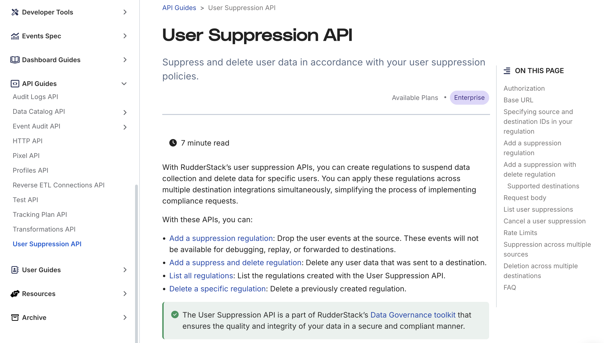
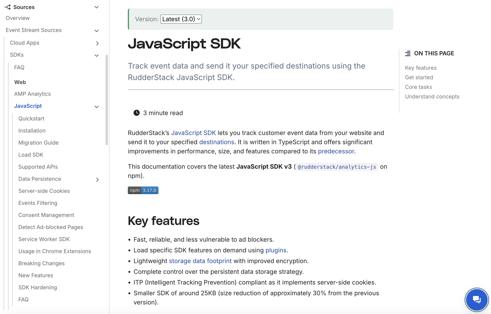
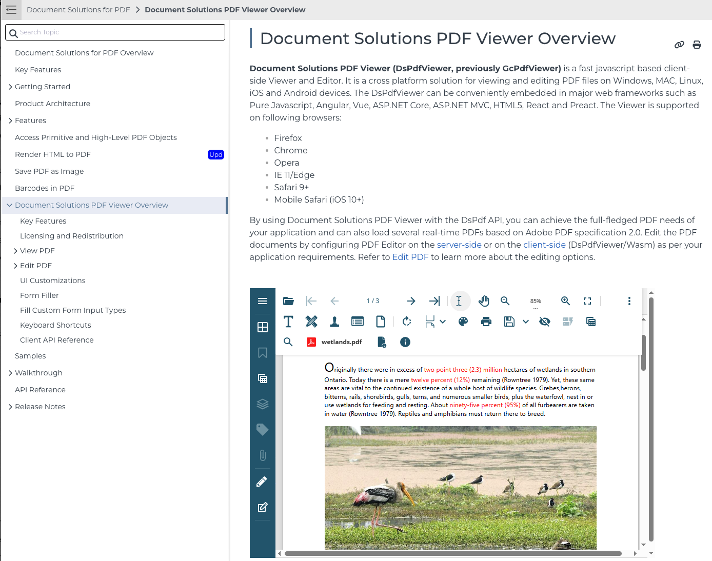
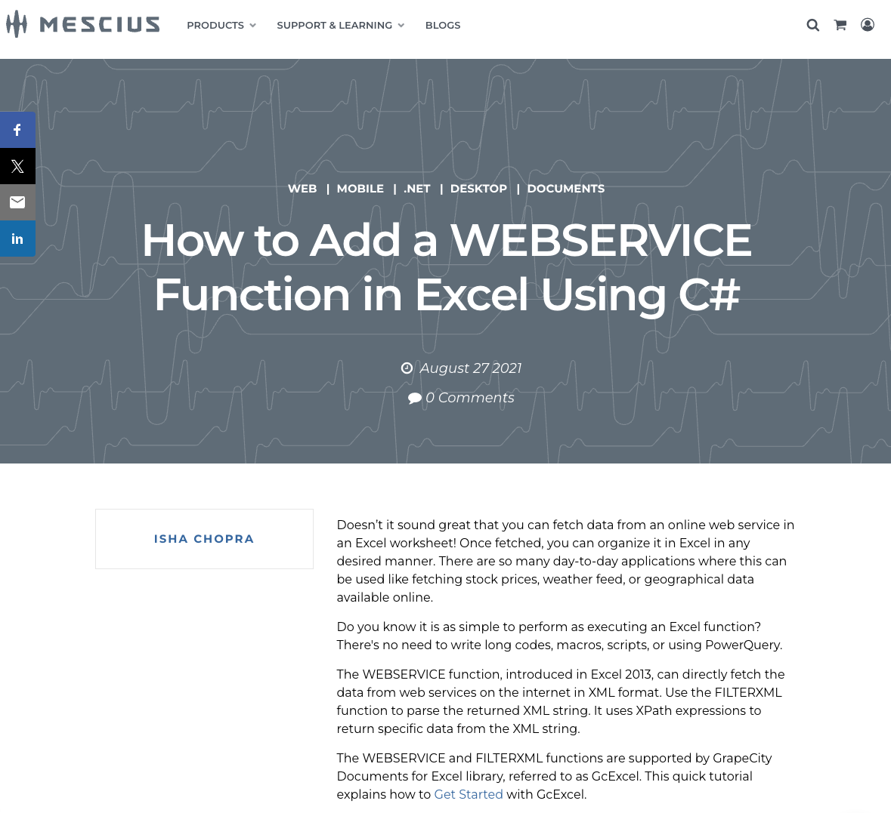

🚀 Project Samples
🧩 User Guide Documentation
👩💻 My Role
Took an active role from the feature conception stage - collaborating with Product Managers, Developers, and QA teams to understand the requirements. Gathered inputs to shape content direction, identified areas for troubleshooting and FAQs, and drafted the documentation. The draft underwent iterative review and approvals before final publication.
🔧 Tools
Hugo, GitHub

🧩 API Documentation
📋 My Role
Engaged with stakeholders to gather API requirements and identify user challenges. Authenticated and tested each API endpoint via Swagger, ensuring accuracy and completeness before drafting precise documentation.
🔧 Tools
Hugo, GitHub
🧩 SDK Documentation
📋 My Role
Connected with stakeholders to understand business goals, technical constraints, and user struggles. Collaborated closely with engineers and QA to capture edge cases and drafted proactive, user-centered documentation.
🔧 Tools
Swagger, Hugo, GitHub
🧩 User Guide Documentation
📋 My Role
Gathered insights on user challenges, key goals, and competitive differentiators. Collaborated cross-functionally to map flows, edge cases, and crafted clear, helpful documentation drafts.
🔧 Tools
Innovasys, Snagit
🧩 Technical Blog
📋 My Role
Used GcExcel API formulas to create a real-world use case for retrieving weather data via a web service. Delivered full code sample, rich content, and illustrative screenshots.
🔧 Tools
Confluence, Snagit
🧩 UX Content Review
📋 My Role
Reviewed SaaS platform screens to ensure clarity, brevity, and user-friendliness. Focused on consistency and alignment with UX writing best practices.
🧩 Blogging Projects
📋 My Role
Freelanced travel-focused blogs for Revv (a self-rental car business) and Headout (a travel company), blending engaging storytelling with SEO strategy to boost visibility and reader interest.